select指令-DISTINCT、WHERE、ORDER BY、TOP、WITH TIES、CHOOSE()、IIF()、UNION、INTERSECT、EXCEPT
select基本語法
SELECT select_list [ INTO new_table ]
FROM table_source
[ WHERE search_condition]
[ GROUP BY group_by_condition]
[ HAVING search_condition]
[ ORDER BY order_expression [ ASC | DESC ] ]
先行準備要測試的資料
CREATE TABLE EMPLOYEE ( no TINYINT, name NCHAR(10), profession NVARCHAR(10), sex NVARCHAR(5), birthday DATE, PRIMARY KEY (no) ) go INSERT dbo.EMPLOYEE VALUES (1, N'Brooke ', N'ceo', N'boy', '19840404') INSERT dbo.EMPLOYEE VALUES (2, N'Mary ', N'eng', N'girl', '19990101') INSERT dbo.EMPLOYEE VALUES (3, N'Bill ', N'eng', N'boy', '19200120') INSERT dbo.EMPLOYEE VALUES (4, N'john ', N'sale', N'boy', '19901112') INSERT dbo.EMPLOYEE VALUES (5, N'tom ', N'sale', N'boy', '19990101')
SELECT no,name,profession,sex,birthday FROM EMPLOYEE
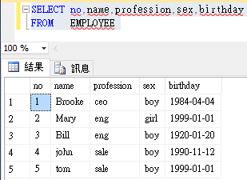
一、DISTINCT：根據輸出所有資料與欄位，將會保證不會出現重複的記錄
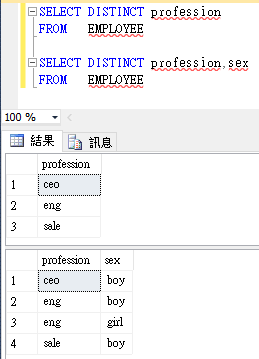
二、資料的基本條件篩選-WHERE
SELECT * FROM EMPLOYEE WHERE sex = 'boy' AND profession = 'sale' OR sex = 'boy' AND profession = 'eng' SELECT * FROM EMPLOYEE WHERE (sex = 'boy' AND profession = 'sale') OR (sex = 'boy' AND profession = 'eng')
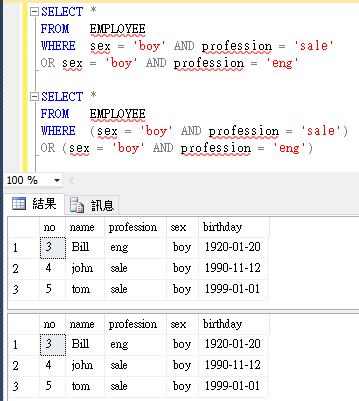
由上例可知，AND比OR優先順序還要高
三、資料行的別名
有時候為了讓表格名或資料行更易於理解，我們會使用「別名」，如下範例
SELECT profession AS pro FROM EMPLOYEE EMP
資料行「profession」利用「AS」關鍵字宣告成「pro」別名，
表格名「EMPLOYEE」可只利用空白也可宣告成「EMP」別名
四、資料排序 ORDER BY ...[ ASC | DESC ]
對資料排序可以是遞增(ASC)或遞減(DESC)方式，範例如下
ORDER BY預設為遞增ASC(由小到大)
SELECT no,name,profession,sex,birthday FROM EMPLOYEE ORDER BY no SELECT no,name,profession,sex,birthday FROM EMPLOYEE ORDER BY no ASC
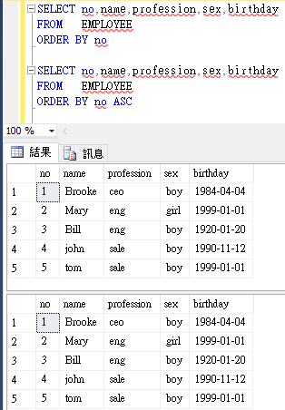
而遞減(由大到小)結果如下
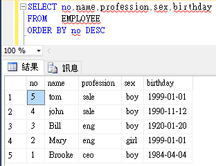
如果希望以n個欄位當作排序條件則要如何做？
先準備一範例
CREATE TABLE [dbo].[NEWS]( [news_id] [int] NOT NULL, [year] [smallint] NOT NULL, [month] [tinyint] NOT NULL, [day] [tinyint] NOT NULL, [time] [int] NOT NULL, PRIMARY KEY ([news_id]) ) GO INSERT dbo.NEWS VALUES (1, 2017, 7, 24, 91051) INSERT dbo.NEWS VALUES (2, 2017, 7, 24, 91116) INSERT dbo.NEWS VALUES (3, 2017, 7, 24, 104303) INSERT dbo.NEWS VALUES (4, 2017, 7, 26, 90758)
這是一張新聞發佈日期資料表，我們希望最新發佈的新聞將排在第一位(遞減)要如何做？
SELECT news_id,year,month,day,time FROM NEWS SELECT news_id,year,month,day,time FROM NEWS ORDER BY year DESC,month DESC,day DESC,time DESC
結果如下圖
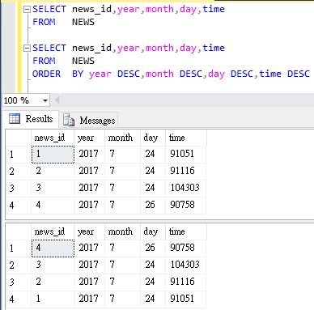
如上例，會根據四個條件做排序，分別先從year開始排，
然後再month、day、time，而本需求是全部都做遞減，
所以需要在每個排序條件特別加上DESC(黃底部份)才行，這點很容易被人忽略須注意。
五、輸出前<n>筆或百分比資料 TOP <n>與WITH TIES用法
先來看原排序
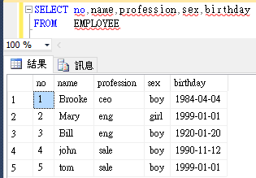
取前百分之五十的資料，如果總共有五筆資料，
百分之五十就是五筆取2.5筆資料，但為了資料的正確性，
則會五筆取三筆資料出來。
SELECT TOP 50 PERCENT name FROM EMPLOYEE
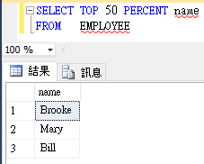
以原來排序的狀態挑出前兩筆資料
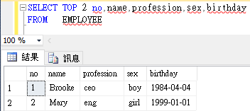
WITH TIES專門與ORDER BY配合，
當只有ORDER BY profession而沒有WITH TIES時，
則單純只是先依據profession排序後再選出前兩筆資料，
但有加WITH TIES之後，除了選出前兩筆資料之外，
還會參考profession，當沒被選到的資料其profession欄位記錄也有出現在前兩筆資料之內，
則將會一併被選入。
SELECT TOP 2 WITH TIES profession FROM EMPLOYEE ORDER BY profession
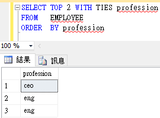
再舉一個WITH TIES例子，先準備一個名為成績單資料表
CREATE TABLE [dbo].[成績單] ( [學號] [NVARCHAR](10) NOT NULL, [姓名] [NVARCHAR](10) NULL, [國文] [INT] NULL, [英文] [INT] NULL, [數學] [INT] NULL, PRIMARY KEY ([學號]) ) go INSERT dbo.[成績單] VALUES (N'9096002', N'心怡', 11, 54, 100) INSERT dbo.[成績單] VALUES (N'9096003', N'依倫', 78, 95, 56) INSERT dbo.[成績單] VALUES (N'9096004', N'家旬', 78, 68, 99) INSERT dbo.[成績單] VALUES (N'9096005', N'志龍', 89, 50, 68) INSERT dbo.[成績單] VALUES (N'9096006', N'志宏', 98, 77, 58) INSERT dbo.[成績單] VALUES (N'9096007', N'秀娟', 56, 88, 100) INSERT dbo.[成績單] VALUES (N'9096008', N'信丞', 68, 88, 89) INSERT dbo.[成績單] VALUES (N'9096009', N'姿玲', 78, 58, 100) INSERT dbo.[成績單] VALUES (N'9096010', N'秋青', 55, 68, 70) INSERT dbo.[成績單] VALUES (N'9096011', N'秋玉', 80, 66, 45) INSERT dbo.[成績單] VALUES (N'9096012', N'淑惠', 99, 88, 77) INSERT dbo.[成績單] VALUES (N'9096013', N'舜任', 77, 45, 99) INSERT dbo.[成績單] VALUES (N'9096014', N'jack''wu', 44, 65, 85) INSERT dbo.[成績單] VALUES (N'9096015', N'富民', 57, 98, 87)
先列出成績單的所有學生資料
SELECT 學號,姓名,國文,英文,數學 FROM 成績單
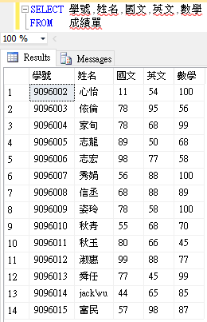
找出成績單資料表平均成績是前三'名'的紀錄
SELECT TOP 3 WITH TIES 學號,姓名,國文,英文,數學,( 國文 + 英文 + 數學 ) AS 總成績,( 國文 + 英文 + 數學 ) / 3 AS 平均 FROM 成績單 ORDER BY 平均 DESC; SELECT 學號,姓名,國文,英文,數學,( 國文 + 英文 + 數學 ) AS 總成績,( 國文 + 英文 + 數學 ) / 3 AS 平均 FROM 成績單 ORDER BY 平均 DESC;
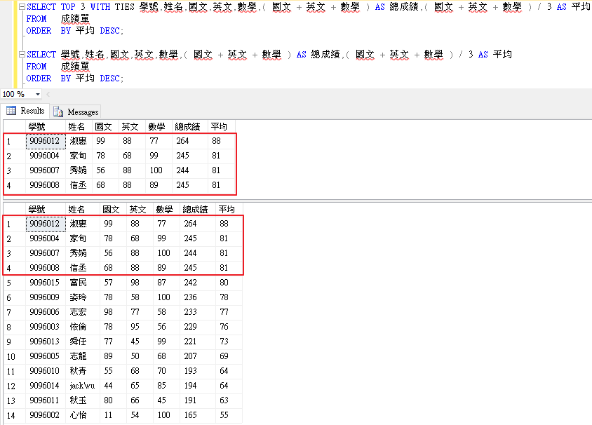
六、CHOOSE()與IIF()函數
先行準備資料表
CREATE TABLE PERSON ( name NVARCHAR(10), age TINYINT, sex NVARCHAR(5) ) go INSERT INTO PERSON (name , age , sex) VALUES ('Brooke' , 30 , 'boy'); INSERT INTO PERSON (name , age , sex) VALUES ('Mary' , 40 , 'girl'); INSERT INTO PERSON (name , age , sex) VALUES ('Bill' , 50 , 'boy'); INSERT INTO PERSON (name , age , sex) VALUES ('John' , 60 , 'boy'); INSERT INTO PERSON (name , age , sex) VALUES ('Tom' , 70 , 'boy');
1、CHOOSE()選擇函數
語法：
CHOOSE(index , string1 , string2 , string3 [ , stringN ] )
SELECT name , age , CHOOSE(age/10-2,'而立','不惑','知天命','耳順','從心所欲，不踰矩') AS '子曰' FROM PERSON
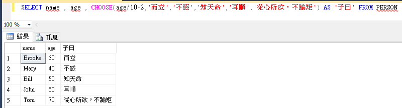
其CHOOSE函數的index如果為1則輸出string1，如果為2則輸出string2，以此類推。
2、IIF()函數
語法：
IIF(boolean_expression , true_value , false_value)
SELECT name , sex , IIF(sex = 'boy' , '先生' , '小姐') AS 稱呼 FROM PERSON
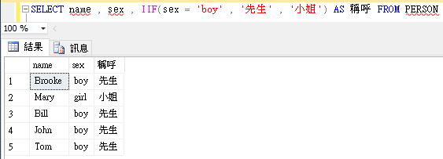
其IIF函數的第一個引數的條件判斷式為true時，則傳回第二個引數值，若否，
則傳回第三個引數值。
七、UNION(聯集)、INTERSECT(交集)、EXCEPT(差集)的用法
為了方便說明，再新增一個EMPLOYER資料表和先前的EMPLOYEE資料表配合演出
CREATE TABLE EMPLOYER ( no TINYINT, name NCHAR(10), profession NVARCHAR(10), sex NVARCHAR(5), birthday DATE, PRIMARY KEY (no) ) go INSERT dbo.EMPLOYER VALUES (1, N'Brooke ', N'president', N'boy', '19840404') INSERT dbo.EMPLOYER VALUES (2, N'Mary ', N'partner', N'girl', '19990101') INSERT dbo.EMPLOYER VALUES (3, N'Bill ', N'partner', N'boy', '19200120') INSERT dbo.EMPLOYER VALUES (4, N'Brown ', N'partner', N'boy', '19901112') INSERT dbo.EMPLOYER VALUES (5, N'Tim ', N'partner', N'boy', '19990101')
1、UNION
已知有人的身份是雇員也是雇主，如果我們想得知雇主和雇員加起來共多少人，
也就是整個公司共多少人要如何列出？
SELECT no,name FROM EMPLOYEE UNION SELECT no,name FROM EMPLOYER
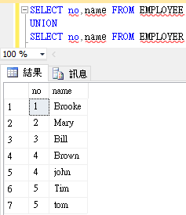
使用 UNION，如果兩集合都有同一筆資料時，則出來的結果會被合併成一筆。
如果只想要把EMPLOYEE與EMPLOYER合成一個資料連集，則使用UNION ALL
SELECT no,name FROM EMPLOYEE UNION ALL SELECT no,name FROM EMPLOYER
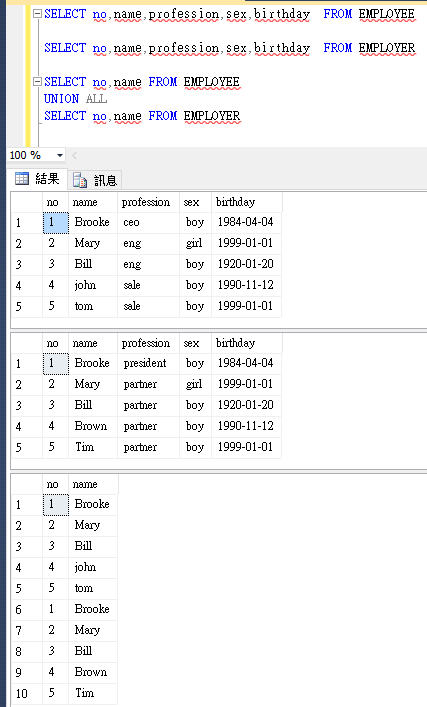
注意：使用UNION語法不能跟ORDER BY語法一起使用
2、INTERSECT
如果要列出有人的身份是雇員也是雇主則
SELECT no,name FROM EMPLOYEE INTERSECT SELECT no,name FROM EMPLOYER
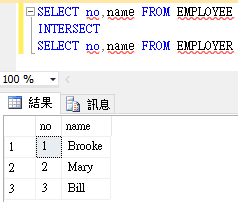
3、EXCEPT
A EXCEPT B 表示為 A集合減掉B集合，如下例
SELECT no,name FROM EMPLOYEE EXCEPT SELECT no,name FROM EMPLOYER
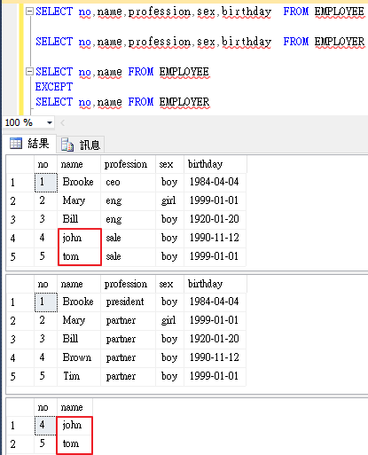
注意，使用 UNION、INTERSECT 或 EXCEPT 運算子結合的所有查詢，其目標清單中的運算式數量必須相等，否則會出錯。
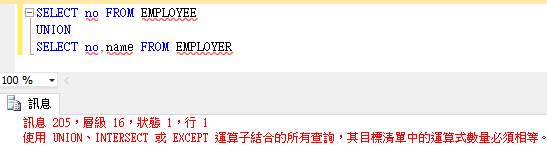